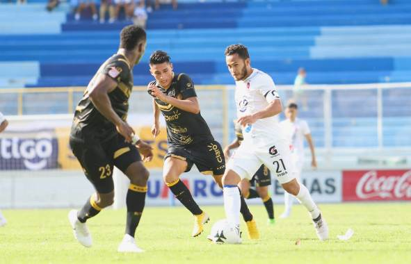

Los dos equipos que se han enfrentado en las últimas cuatro finales de la Primera División, Alianza F.C. y Santa Tecla F.C., se midieron la tarde de este domingo en la fecha cuatro del Torneo Apertura 2018. Los vigentes campeones salieron al engramillado del Estadio Cuscatlán con el tradicional uniforme blanco y los pericos del Santa Tecla vistieron de negro. Lo peculiar de este choque es que dos exfiguras aliancistas, Gustavo Guerreño y Rodrigo Rivera, se enfrentaron a su exequipo, en el que actualmente milita Marlon Cornejo, exvolante del cuadro tecleño. El pitazo inicial lo dio el árbitro Ismael Cornejo. Alianza movió el balón y 120 segundos después, por medio de José Ángel “El Puma” Peña, lo estrelló en la base del poste derecho. Los aficionados de casa se quedaron con el grito de gol en la boca, estuvieron muy cerca de celebrar. En el primer cuarto de hora, las dos escuadras estuvieron muy concentradas en el medio campo. Hubo una leve ventaja para el subcampeón que hacía un mejor manejo de la pelota. Jonathan Jiménez, defensor blanco, al minuto 20 le agarró la camiseta a Ricardinho, delantero brasileño, rompiéndola de la manga al instante. Ambos jugadores fueron amonestados con cartulina amarilla. Sobre la media hora de juego, Gersón Mayén se encargó de cobrar un tiro libre desde el sector izquierdo. Pateó y el esférico se fue arriba del poste. El cero a cero se mantenía. Al minuto 39 ocurrió un volante de Santa Tecla mandó al área un centro que Iván Mancía, zaguero capitalino, en su intento por rechazarlo, terminó provocando un tiro de esquina. Los paquidermos se salvaron de un autogol.
El cierre del primer tiempo se vino, los blancos cobraron un tiro de esquina. La pelota cayó en el área y fue aprovechada por Isaac “El Clavito” Portillo, quien cabeceó pero terminó enviándola fuera del arco. Cero a cero fue el resultado de la primera parte. Gilberto Baires, mediocampista de los pericos, en el comienzo de la segunda mitad mandó un potente disparo de larga distancia. Víctor García, arquero albo, se estiró para intentar atajar el tiro que se fue arriba del travesaño. Ismael Cornejo sancionó a Yosimar Quiñonez con tarjeta amarilla en el minuto 53. Seguido de esta acción, Rodolfo “Fito” Zelaya ingresó al terreno de juego para sustituir al “Puma” Peña. Ricardinho fue sustituido por Guerreño, delantero paraguayo que fue campeón de goleo en el torneo Apertura 2017 con Alianza. La hora de juego se cumplió. Ingresó Juan Carlos Portillo en lugar de Narciso Orellana. Ningún conjunto provocaba peligro o encerraba al otro en el área, pues el juego era de media cancha. La barra capitalina saltó y gritó al minuto 66. El delantero Bladimir Díaz en el borde del área recibió un balón de Jiménez, se metió y con la pierna derecha puso el uno a cero. Segundos después de la anotación, Santa Tecla realizó su segundo movimiento, ingreso a Kevin Santamaría y retiró a Rodrigo Rivera. Cinco minutos después, hizo la tercera sustitución sacando a Jairo Henríquez e introduciendo a Jacobo Moreno. Asimismo, en la escuadra capitalina se produjo un cambió. Herbert Sosa llegó para darle descanso a Díaz, el autor del gol. Un choque físico entre Moreno y Víctor García, hizo que el primero saliera lesionado de la cancha y posteriormente trasladado a un hospital privado. Guerreño empató el juego al minuto 85. Tiro libre, la pelota cae en el área de Alianza y el paraguayo sin mayor problemas dispara al arco. Los pocos aficionados del cuadro tecleño festejaron el empate. Poco le quedaba al partido, cuando el árbitro amonestó con tarjeta amarilla a Joel “Pituca” Almeida, portero de Santa Tecla. El juego acabó y el marcador quedó uno a uno. En la próxima jornada, los elefantes visitarán al Jocoro F.C y los pericos serán locales ante los emplumados de C.D. Águila